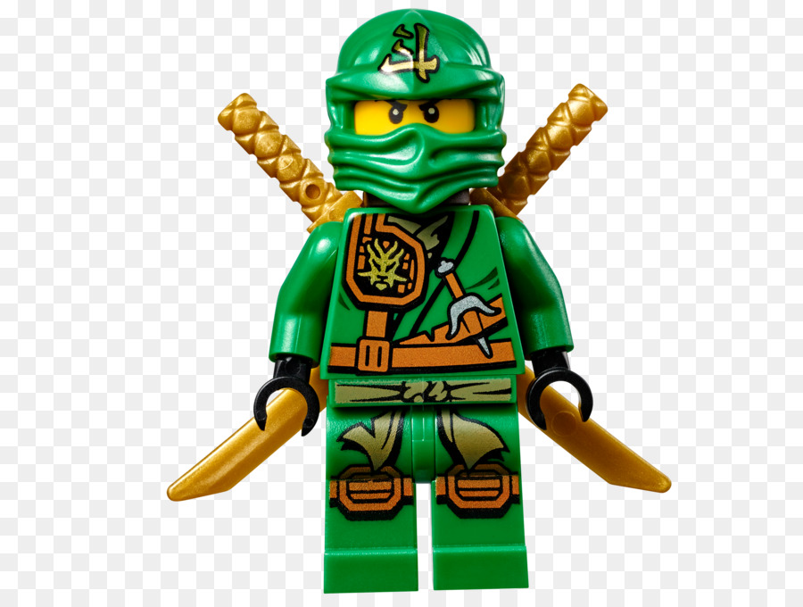
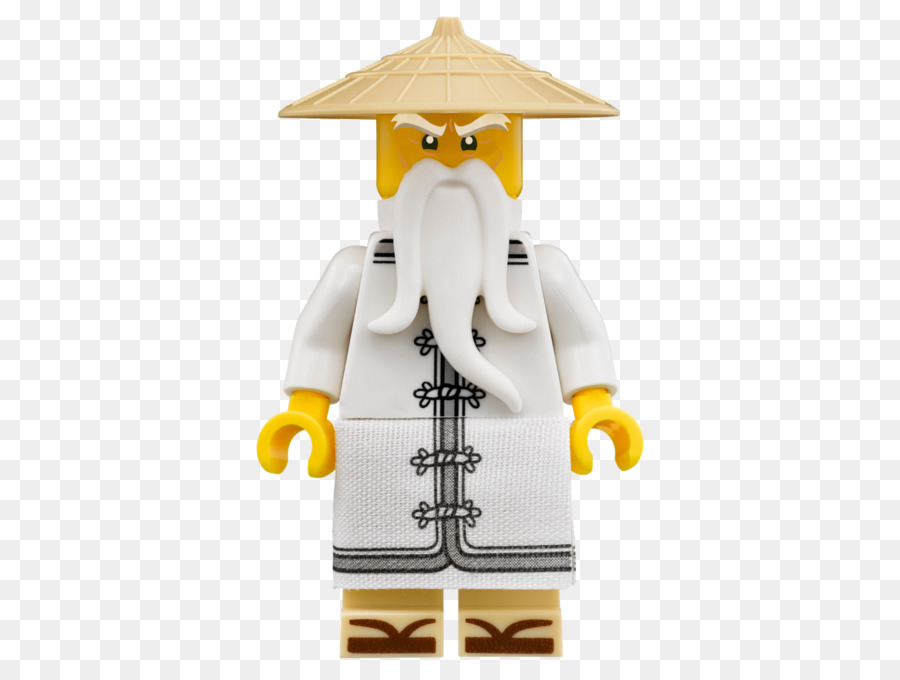

|  | Lloyd | Lloyd Montgomery Garmadon (También conocido como Joven Garmadon o Ninja Verde) es uno de los personaje principales de la serie Ninjago, aunque al principio se mostraba como un antagonista o un personaje menor. El es el hijo de Lord Garmadon, por eso quería seguir los pasos de su padre. Sin embargo todo su futuro cambia cuando se descubre que el es el Ninja Verde. Después el empieza a entrenar para derrotar a su padre ya que la profecía dice que el Ninja Verde vencerá al Señor Oscuro (Lord Garmadon). |
|  | Un multimillonario, empresario e ingeniero, Tony Stark sufre una lesi�n en el pecho durante un secuestro en el que sus captores tratan de obligarlo a construir un arma de destrucci�n masiva. �l crea en su lugar una poderosa armadura para salvar su vida y escapar de su cautiverio. Luego utiliza la armadura para proteger al mundo como Iron Man. |